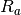
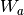
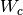
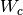
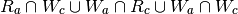
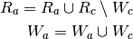

Lazy Evaluation¶
Approach¶
Unless explicitly set up to execute greedily, parallel loops are not executed immediatly. In doing so, it opens PyOP2 to a range of execution rescheduling and program transformations at runtime.
Delaying computations¶
In order to delay the execution of parallel loops, ParLoop objects inherit from LazyComputation and must implement the execution of the parloop in the _run() method. LazyComputation objects implement enqueue(), which stores the computation to be delayed into a list structure, ExecutionTrace, for later execution.
Declaring computations¶
For the purpose of reordering the execution of parallel loops while preserving the correctness of the PyOP2 program, when inheriting from LazyComputation, ParLoop objects must declare their input/output dependencies, that is the set of Dat objects that read and/or written during the execution of the par_loop(). This is directly derived from the arguments of the ParLoop, see the instance attributes reads and writes of LazyComputation.
Forcing computations¶
To access the up-to-date content of Dats, these must force the execution of delayed parallel loops before it can be accessed. This is done by calling evaluate() of the ExecutionTrace from the Dat‘s public accessors, passing the reads and writes dependencies to be updated. For instance evaluate(reads={a,b}, writes={b}, tells a and b should be updated with the intent of being read, and read and writen respectively.
Propagating dependencies¶
The method evaluate() determines which of the delayed computations must now be executed in order to satisfy the read and write dependencies of the given arguments. This method iterates the delayed execution trace in reverse order: from the most to the least recently delayed computation.
Let us call , ,  and , the read
(
and , the read
( ) and write (
) and write ( ) dependencies passed as arguments (
) dependencies passed as arguments ( )
and of the delayed computation (
)
and of the delayed computation ( ) respectively. Computation
is required to be executed if
) respectively. Computation
is required to be executed if

is not empty. In other words, if a dependency read is writen by , if
a dependency written must be read first, or if a dependency is being
overwritten, preserving write ordering.
if c is required for or then and become:

New write dependencies need to be propagated, but read dependencies that will be updated need not.
Once the iteration of the list is over, dependent computations are executed in oldest to most recent order and removed from the list.
Notes¶
lazy-split branch¶
Changes:
- A ParLoop no longer inherits from LazyComputation, instead, the ParLoop constructor instantiates a LazyComputation object: start halo exchange, compute core elements, finish halo exchange, compute owned elements, compute halo elements. This avoids a circular dependency problem in the code.
- Helper class (CORE, OWNED, HALO) help create finer dependencies for PyOP2 Data objects.
- Instead of enqueuing halo exchange computation at the end of the trace, they are push as far back as possible (as long as the previous computation is independant of the halo echange).